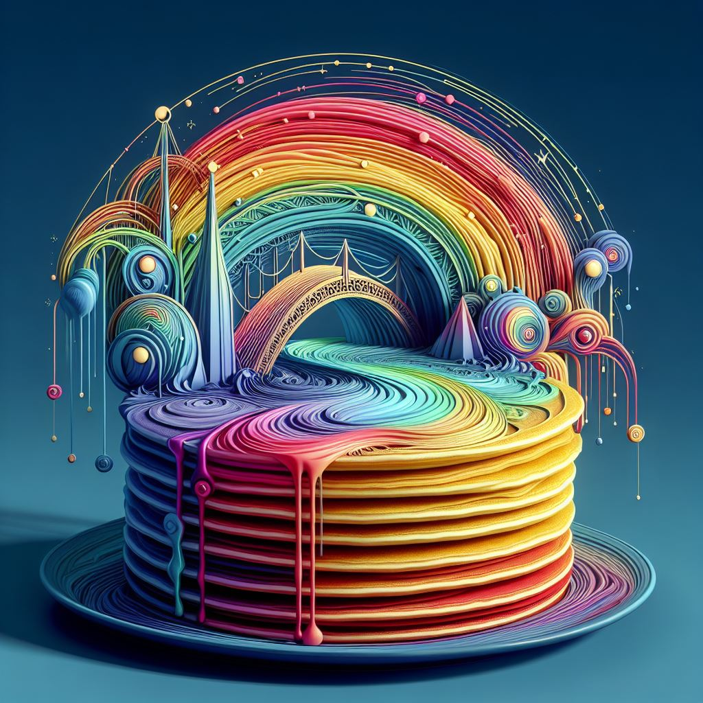

Bifröst Pancakes

Description:
These brightly colored pancakes are inspired by Bifröst, the mythical rainbow bridge that connects worlds in
Norse mythology.
Ingredients:
- 2 cups all-purpose flour
- 2 eggs
- 1 cup milk
- 1/4 cup sugar
- 1 teaspoon baking powder
- Food coloring in various colors
Instructions:
- Mix flour, eggs, milk, sugar, and baking powder in a large bowl.
- Divide the batter and add different food coloring to create a vibrant stack of pancakes.
- Cook the pancakes in layers on a plate to create a "rainbow" stack.